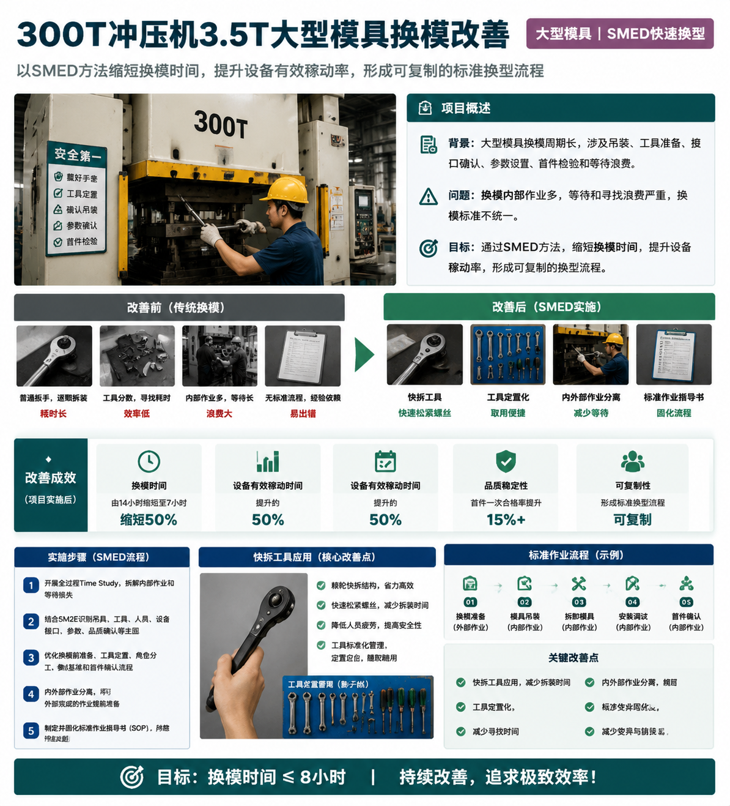
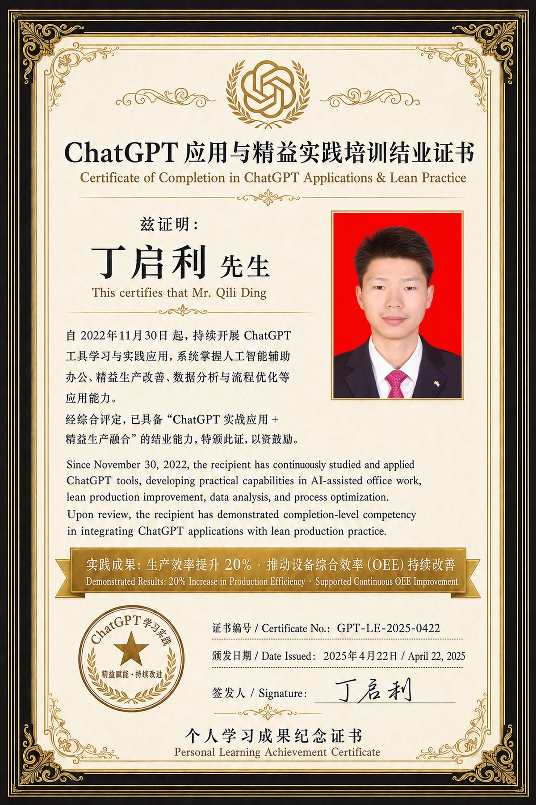

P/D 效率与交付
交付周期、WIP、节拍与换型
面向交付周期偏长、WIP堆积、Takt瓶颈、Line Balancing、SMED换线换模等问题，运用VSM、Time Study、OEE、SMED、单件流/小批流和SOP/SWI。
输出：缩短Delivery LT、降低WIP、提升稼动率、稳定节拍。
制造运营改善与工程技术管理专家。20年制造业工程技术、精益改善与咨询交付经验，兼具企业内部管理与外部顾问双视角，覆盖PCBA、SMT、汽车电子、电气、新能源、半导体、小家电等多制造场景，聚焦PQCD改善、数智化工厂落地、目视化项目交付与精益体系建设。
按最新版简历口径重整：不只展示数字，而是把成果对应到“制造场景、改善方法、组织机制、数据口径”四个维度，便于面试沟通时展开项目细节。
来自简历中的能力域结构：P/D效率与交付、Q质量与良率、C成本与资源、规划与项目。网页端进一步展开典型场景、关键方法和价值输出。
面向交付周期偏长、WIP堆积、Takt瓶颈、Line Balancing、SMED换线换模等问题，运用VSM、Time Study、OEE、SMED、单件流/小批流和SOP/SWI。
面对Recurring Defect、首件/巡检薄弱、工艺参数波动等问题，使用8D、5W2H/PDCA、Pareto、Process Window、Poka-Yoke开展过程控制。
通过工装治具改善、Factory Layout、库位编码、Visual Management和物料流优化，减少寻找、等待、搬运、切换和库存浪费。
在新工厂/新产线规划、NPI导入、ECN/ECR评审中，结合EVT/DVT/PVT/MP阶段门与PMO机制提升项目可控性。
恢复并强化履历主线：不是按年份简单罗列，而是呈现从一线IE/TE工程、工程部管理、Lean咨询交付到当前数智化工厂推进的能力递进。
服务汽车座椅开关、线束、注塑、装配、SMT/波峰焊等汽车电子制造场景。推进精益生产体系、VSM价值流分析、IE标准工时/标准产能、6S稽查机制、目视化管理、SMED、车间布局与ERP/MES基础数据改善。
服务汽车电子、电气、新能源、半导体、小家电等制造企业，负责Gemba诊断、VSM/5M2E分析、改善蓝图、5W2H/PDCA推进、Pilot验证、横向复制与机制固化。
管理PE/IE/ME/TE工程团队，覆盖NPI导入、工艺工程、设备工装、测试工程与ECN/ECR。建立EVT/DVT/PVT/MP阶段门和跨部门评审机制。
从一线工程技术岗位沉淀Standard Time测定、动作分析、Line Balancing、产能评估、工艺参数优化、治具改善及5W2H不良闭环能力。
严格回到最新版简历的代表项目经历，按“项目—关键动作—量化/阶段结果”重新组织，避免脱离简历事实。
围绕“精益体系搭建 + 主流产品族改善验证”双主线，建立精益组织职责、推进总纲、DMS日常管理系统、6S稽核、红线管控与改善表单等公司级运行框架。

针对300T冲压机3.5T大型模具换模周期长、等待浪费高的问题，开展全过程作业分解与Time Study，结合5M2E分析换模损失要因。
规划180㎡智能模具立体库，建立模具编号、库位编码及模具本体/库位二维码关联机制，规范领用、归还、保养、维修、报废全流程。
建立断裂不良数据采集口径并开展Pareto分析，结合5M2E识别刀具、速度、压力、夹持、定位及首件确认等关键制程要因。
围绕VSM、标准工时、SMED、ERP/MES、IE数据底座、目视化管理和单件流等主题，持续沉淀制造改善方法与标准化参考资料。
从订单信息流、物料流、WIP、等待和交付周期结构出发，把VSM从图形工具转化为跨部门改善路径。
查看详情说明标准工时如何支撑标准产能、UPPH、PMC排程、ERP/MES基础数据和经营改善分析。
查看详情从真实换模测时、内外部作业分离、角色分工、工具接口标准化到程序文件固化。
查看详情把精益现场改善成果转化为系统可使用的数据、规则、参数和经营反馈闭环。
查看详情阐明标准工时、工艺路线、资源能力和现场实绩规则为何是数智化工厂的地基工程。
查看详情从6S标识、看板、通道、安全警示、库位和工位管理，说明目视化如何成为现场协同语言。
查看详情围绕计划冻结、外部准备、停机换模、首件确认、品质放行与复盘固化，呈现汽车座椅开关注塑件快速换模的标准化实施路径。
围绕计划拉动、节拍平衡、标准在制、FIFO流动、质量内建与异常响应，呈现汽车座椅开关总成组装单件流的标准化实施路径。
求职定位：精益经理、工程部经理、改善负责人、制造工程管理、数智化工厂推进与运营改善类岗位。
适合从6S、DMS、VSM、标准工时、线平衡、单件流/小批流、SMED到项目收益固化的改善岗位。
适合负责NPI导入、工艺工程、设备工装、测试工程、ECN/ECR、阶段门评审和工程团队建设的管理岗位。
适合跨部门推进PQCD改善、数智化工厂建设、Factory Layout、物流优化、目视化项目交付和运营改善的项目型岗位。

AI在制造改善中的定位是效率工具、知识整理工具和数据分析辅助工具，而不是替代现场判断。真正有效的AI + Lean，应当服务于问题澄清、资料整理、表单生成、项目复盘、培训输出和知识库沉淀。